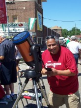

Please note: the AAS Obituaries are temporarily being hosted on this website while their full content is being ingested into the PubPub publishing platform newly adopted by the Bulletin of the American Astronomical Society. When the migration is complete, your existing links will take you to the final, migrated content. Contact peter.williams@aas.org with any questions.
Dennis J. Lamenti (1958-2012)
Eulogy
(For Dennis Lamenti, written by Richard H. Durisen)
I sing a song for this brave man,
curious and kind,
whose laughter burst from deep
within his ample heart.
Warrior of formulas and codes,
he traced the mathematics
of the stars, with wonder,
through his ancestors’ eyes,
And studied the tracks of science
to divine his way anew
along the sacred path,
out of the common desert.
Who could doubt the worthiness
of this proud man?
Who did not see those constellations
twinkling in his eyes?
Hair pulled back in a ponytail,
“I am Diné,” he would say,
And now the spirit of this wise man
flies beyond the galaxies,
speaking distant legends
few of us will ever hear.
Diné astronomer Dennis J. Lamenti began graduate studies in astronomy at Indiana University in 2006, after earning his Bachelor of Science degree in Physics from San Francisco State University. Dennis was born in Flagstaff AZ to his parents Evelyn and Jimmy Lamenti, and his family emphasized the importance of education as a means to serve his people. He discovered his love for astronomy through his personal search for knowledge about the Holy People of the Diné, and began his formal studies of physics at Berkeley in 2002. He thirsted for knowledge and found inspiration in the connections among so many fields of physics and astronomy that come together to create our understanding of the Universe.
In his sophomore year at Berkeley, Dennis’s experience with the Nearby Supernova Factory at the Lawrence Berkeley National Laboratory, developing algorithms to determine sky transparency in support of automated observations, drew him to astronomy. He worked for two summers with John Marriner at the Fermi National Accelerator Laboratory on the Sloan Digital Sky Survey Supernova Program. Dennis was responsible for programming the system to review supernova candidates visually using a web-based interface to the supernova database. His system was used unchanged for the duration of the survey.
Graduate school opened another new world for Dennis, a world filled with excitement, challenges, reassessment, and new perspectives, through his interactions with faculty and fellow students. He came to appreciate the collaborative nature of astronomy and to value the strength of working together with others, rather than alone.
During his graduate studies at Indiana University, Dennis received support from many sources, including research grants from the National Science Foundation, the Indiana University Graduate School, the Hollis and Greta Johnson endowment, Indiana Space Grant Consortium’s Graduate Fellowship program, the Midwest Crossroads Alliance for Graduate Education and the Professoriate Fellowships, and departmental teaching assistantships. In 2009, Dennis successfully defended his Master’s research “Low-Amplitude Radial Velocity Studies in Praesepe,” working with Catherine Pilachowski, and received his Master’s Degree in Astronomy, sharing the joy of his accomplishment with his family and friends. As of Spring 2012, Dennis was completing his coursework for the Ph.D. and was planning to continue research on binary stars in clusters for his dissertation.
Dennis loved to share his passion for Astronomy, especially to encourage Native American students to appreciate the connections between Diné culture and science, and to be aware of opportunities for Native American students in the sciences. While at IU, Dennis characteristically reached out to other Native American students and was extremely active in promoting academic success. He was among the three graduate students who, together, successfully founded IU’s First Nations Educational and Cultural Center. Dennis attended and contributed to meetings around the country to help broaden participation of Native American students in the sciences and to expand astronomy education. Some of these were sponsored the AAS, the Astronomical Society of the Pacific, the Society for the Advancement of Chicanos and Native Americans in Science, and the National Society of Black and Hispanic Physicists. Dennis served as chair of the Working Group on Cultural Astronomy and Storytelling for the American Astronomical Society for the International Year of Astronomy, to bring wider awareness of indigenous astronomy to the public. Dennis was a regular volunteer for departmental outreach efforts, including astronomy open houses, special public viewing opportunities, and visits to local schools. He was always eager to educate others about Diné culture and participated in many events throughout the state to promote understanding of Native cultures.
Richard Durisen, who taught Dennis’ graduate stellar interiors class, fondly remembers going over arcane points of stellar physics with Dennis one-on-one, because it was such a joy to watch his face light up with genuine awe when he understood, for the first time, some intricate aspect of how the universe works. He usually expressed this with a broad grin, a chuckle, and an “Oh, wow!” Dennis was also a natural educator, who radiated his childlike and infectious delight in the wonders of astronomy to others. He loved teaching, and his students responded to his openness to ideas and his joy in learning about the world around him. He inspired his students with his love of knowledge.
A particular goal for Dennis was to merge the worldview of modern astronomy with the spirit of Native American culture and to share this cosmic perspective with the Native American community. In his own words, “It was this magnificent beauty of the Universe that drew me in and to understand some part of it would be to understand the Diyin Diné (Holy People). So astronomy is a spiritual path for me.”
No one who heard his laughter can ever forget its heartiness and warmth. He touched the lives of many, many people and will be sorely missed.
His final days were spent peacefully with his family, with clear vision and acceptance. Dennis is survived by his parents, who now live in Concord, California, by sisters Denice Hill and Dawn Pywell, and by his nieces and nephews, all of whom he cherished. His spirit left this Earth with his family around him on one of his favorite holidays, Halloween. We are all comforted in the knowledge that Dennis will forever walk among the stars.
Prepared by: Richard H. Durisen and Catherine Pilachowski of the IU Department of Astronomy, with contributions from Dennis’ family and friends.
Obituary written by: Richard H. Durisen, Catherine Pilachowski
BAAS Citation: BAAS, 2013, 45, 006